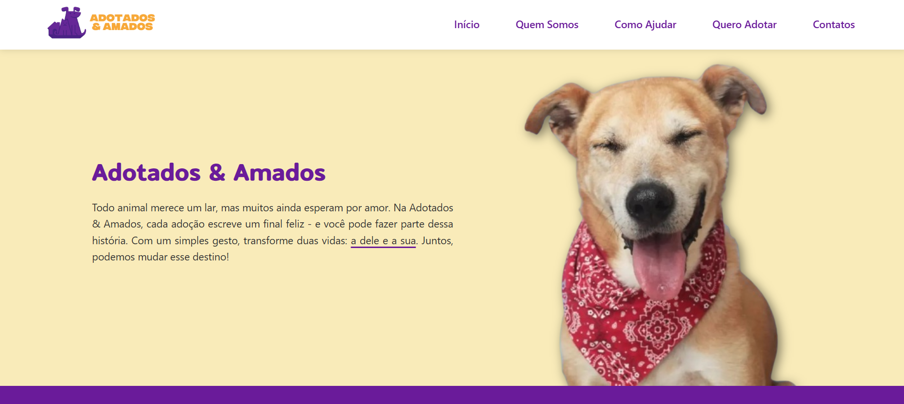
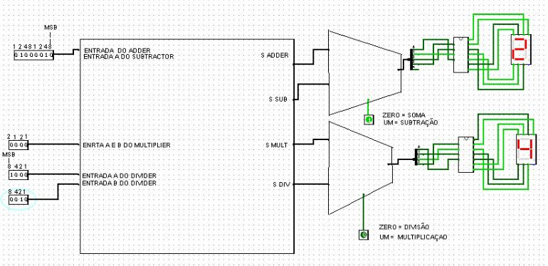

Projetos

Adotados & Amados
Site desenvolvido como parte de um trabalho extensivo na disciplina de Programação Web. O tema abordado é "Site Socialmente Positivo", e a escolha da instituição Adotados & Amados foi feita para apoiar a causa da adoção de animais.
Acessar projeto

Calculadora Binária
Projeto de análise e implementação de circuitos digitais complexos, utilizando portas lógicas para criar uma Unidade Lógica e Aritmética capaz de realizar operações de processamento de dados. A calculadora seleciona diferentes operações.
Acessar projeto
Meu Amigo Totoro
Projeto inspirado em uma cena do filme 'Meu Amigo Totoro'. Foi criada uma animação com chuva, trovões, clarões e uma árvore que cresce quando a chuva cessa, controlada por um slider, utilizado a biblioteca p5.js para a disciplina de Projeto Integrador.
Acessar projeto